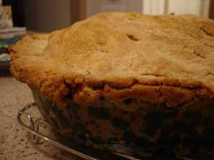

Apple pie saves the day
I had guests for dinner tonight and served them a terribly disappointing meal; the spareribs were tough, the sweet potatoes were underdone and had to be finished off in the microwave, and I even overcooked the green beans a little bit. In fact, I’m beginning to wonder about my new oven, because those ribs and potatoes really should have been tender in the amount of time they spent baking. I need to get an oven thermometer and check the temperature for accuracy.

Fortunately I was able to redeem myself with a luscious apple pie, the first one of fall. I was a little worried that the apples might not be cooked enough after eating the rest of the dinner, especially because it was such a big pie, but I used Macintosh apples and they get soft more readily than other varieties. Some people like the apples in their pie to keep their shape and even stay a little crunchy but I am not one of them. I like them to become meltingly tender and almost turn into applesauce. I really hate biting into a slice of pie and having the apples offer resistance to my teeth. I bought the apples at McGinnis Sisters yesterday; they were from a local orchard and had a divine flavor, winey and tart.
Comments
Ahh yes, working out the quirks of a new kitchen must be really fun. I can imagine, though, that you were more disappointed about the dinner than your guests. They probably loved it all. You inspire me with the pie.
That pie looks so good. How about a recipe?
When I cook disappointing meals my boyfriend insists they’re fine and earts heartily, but I get so annoyed at myself that I lose my appetite.
Mmmm…apple pie! The best thing about autumn next to sweaters. I agree with the others. We cooks are always harder on ourselves than our guests.
hee hee. I’m a terribly demanding hostess who loves a play on words and I have to disagree with Anne . . . I am always harder on my guests than myself . . . .
Very funny, zp, and you’re right, I was harder on the guests than I was on myself because I didn’t even eat the ribs but being good guests the way they were they gnawed their way through them. I simply deemed them inedible and left them on my plate, but I would never do that in someone else’s house! And I’m not even referring to your execrable play on words… :)
Your pie looks beautiful. I hope you had enough leftover for breakfast the next day. There’s nothing like cold apple pie for breakfast.
I feel an apple pie coming on. Yours looks wonderful. My favorite pie apple is the Northern Spy-but they have an even shorter season than the Honeycrisps. they are quite a late apple, and not ready yet in PA.
I know I’m supposed to apologize and explain as much as I do, but I think in the case of food gone very wrong, and guests, it’s only fair to say so..it gives them permission to leave it on the plate.
Or maybe not…I’d probably still try to eat it at someone else’s house.
Unfortunately, Julie, Calvin beat me to the last slice but it’s just as well because after the outragous way I behaved with those ginger cookies I really didn’t need to eat apple pie for breakfast, although I agree with you, it makes a fine breakfast; my mother used to put pie in a cereal bowl and pour milk over it. I have been known to heat a slice and pour heavy cream over it but that really is gilding the lily and makes a pretty rich morning meal.
Lindy, I think you mean you know you’re not supposed to apologize and explain, and I know what you mean, guests, unless they’re real cooks, don’t understand that they’re not expected to reassure you and try to make you feel better, that you’re actually just objectively critiquing your own meal and maybe trying to figure out what went wrong. Now in the case of these ribs I wouldn’t have minded someone saying something like “You must be disappointed after what you spent on the meat.” because I did get good meat from McGinnis Sisters, but when they started saying, “No, it’s delicious!” I just realized it was time to shut up.
Add a comment